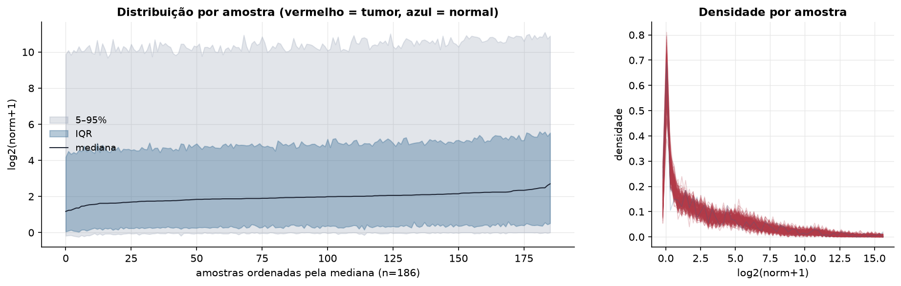
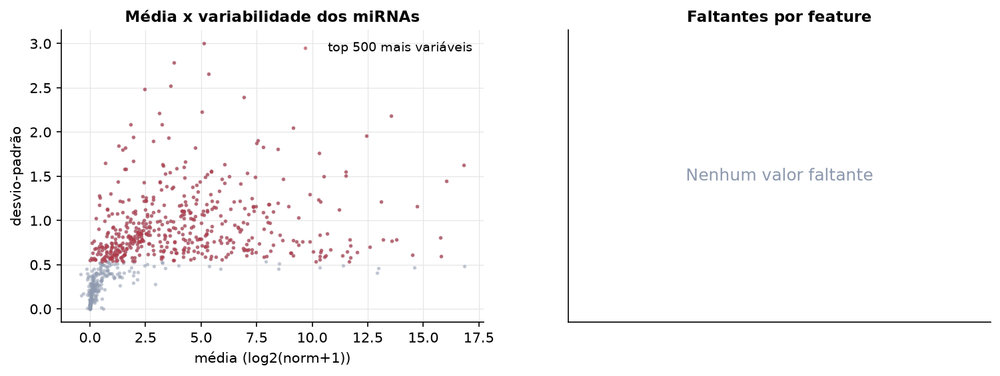
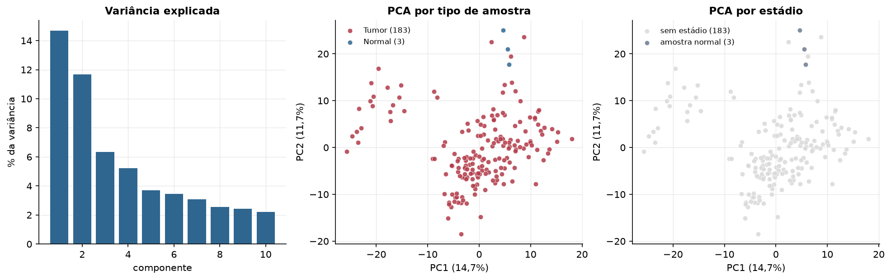
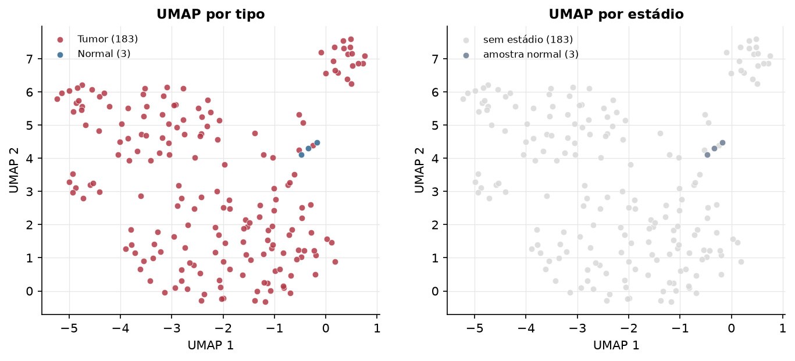
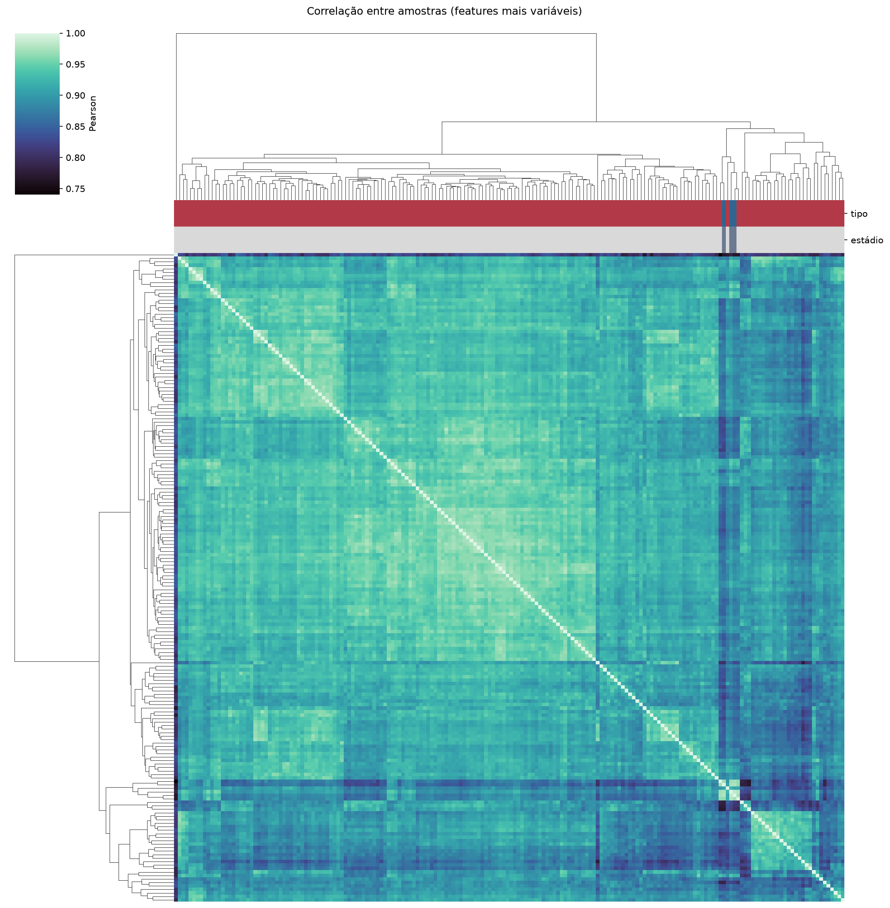
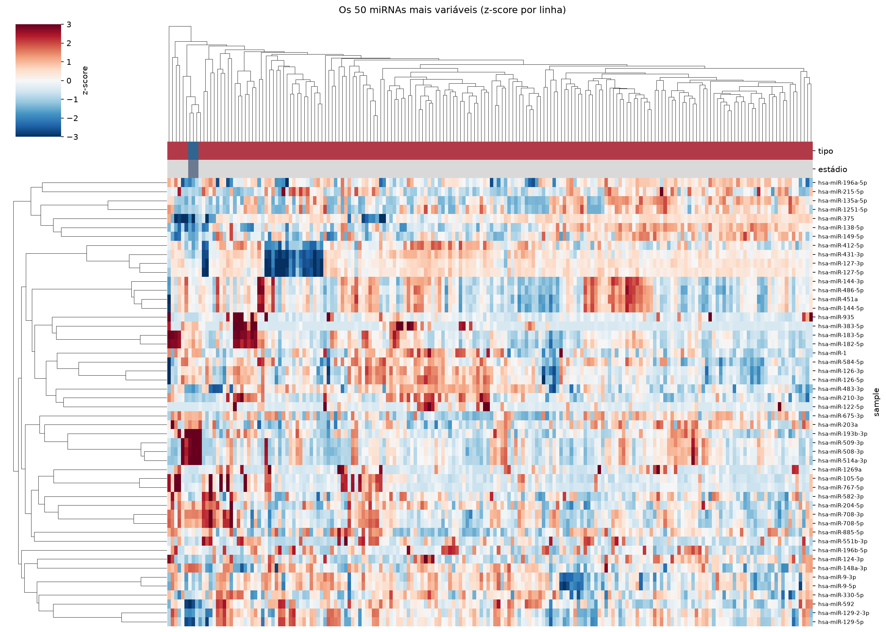
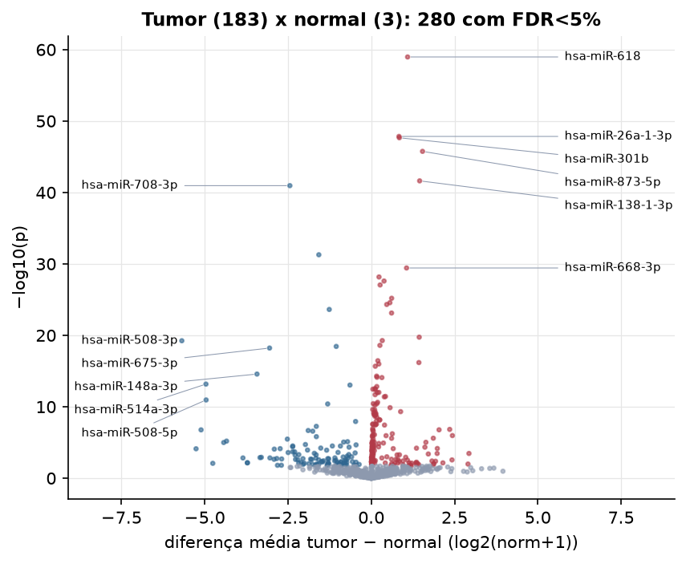
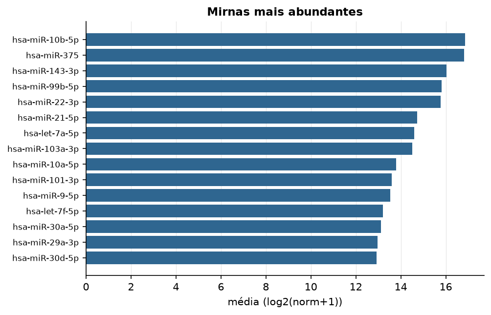

PCPG · miRNA-seq (PanCanAtlas)
miRNA maduro, normalizado e corrigido por lote (EB), log2(x+1) · gerado em 22/10/2026 02:45
743miRNAs
183amostras tumorais
3amostras normais
0,0%valores faltantes
Fonte: PanCanAtlas (pancanMiRs_EBadjOnProtocolPlatformWithoutRepsWithUnCorrectMiRs_08_04_16.xena)
Fita madura (5p/3p) já normalizada. As contagens brutas por precursor estão no relatório de contagens.
Principais resultados
- 743 miRNAs medidos em 186 amostras (183 tumorais e 3 normais); 0,0% dos valores estão faltando.
- Os dois primeiros componentes principais explicam 14,7% e 11,7% da variância das features mais variáveis.
- Correlação mediana entre amostras: 0,92.
- Amostras com correlação muito abaixo das demais (possíveis outliers técnicos): TCGA-QT-A5XJ-01.
- Tumor x normal: 280 miRNAs diferentes com FDR < 5% (169 maiores no tumor, 111 maiores no normal; 3 pacientes têm o par tumor-normal).
- Mais aumentados no tumor: hsa-miR-618, hsa-miR-26a-1-3p, hsa-miR-301b, hsa-miR-873-5p, hsa-miR-138-1-3p, hsa-miR-668-3p, hsa-miR-150-3p, hsa-miR-3648.
- Mais reduzidos no tumor: hsa-miR-708-3p, hsa-miR-28-3p, hsa-miR-493-5p, hsa-miR-508-3p, hsa-miR-493-3p, hsa-miR-675-3p, hsa-miR-148a-3p, hsa-miR-514a-3p.
- Nenhum dos três primeiros componentes principais se associou a estádio, sexo, idade ou sobrevida com p < 0,05.
Distribuição dos valores


Estrutura das amostras




Tumor x normal

Features mais diferentes entre tumor e normal
| sample | diferenca_tumor_menos_normal | t | p | fdr |
|---|---|---|---|---|
| hsa-miR-618 | 1.091 | 24.568 | 1.07e-59 | 7.92e-57 |
| hsa-miR-26a-1-3p | 0.832 | 20.278 | 1.43e-48 | 5.28e-46 |
| hsa-miR-301b | 0.842 | 20.209 | 2.2e-48 | 5.41e-46 |
| hsa-miR-873-5p | 1.539 | 19.511 | 1.77e-46 | 3.26e-44 |
| hsa-miR-138-1-3p | 1.453 | 18.028 | 2.38e-42 | 3.51e-40 |
| hsa-miR-708-3p | -2.444 | -20.015 | 1.11e-41 | 1.37e-39 |
| hsa-miR-28-3p | -1.575 | -34.059 | 5.29e-32 | 5.57e-30 |
| hsa-miR-668-3p | 1.059 | 14.288 | 3.74e-30 | 3.45e-28 |
| hsa-miR-150-3p | 0.232 | 13.387 | 6.79e-29 | 5.56e-27 |
| hsa-miR-3648 | 0.384 | 13.194 | 2.51e-28 | 1.85e-26 |
| hsa-miR-365b-5p | 0.266 | 13.007 | 8.91e-28 | 5.97e-26 |
| hsa-miR-1275 | 0.612 | 12.373 | 6.52e-26 | 4e-24 |
| hsa-miR-216a-5p | 0.559 | 12.162 | 2.71e-25 | 1.54e-23 |
| hsa-miR-1251-3p | 0.464 | 12.077 | 4.82e-25 | 2.54e-23 |
| hsa-miR-493-5p | -1.262 | -15.982 | 2.4e-24 | 1.18e-22 |
| hsa-miR-552-5p | 0.61 | 11.668 | 7.58e-24 | 3.49e-22 |
| hsa-miR-935 | 1.439 | 10.501 | 1.82e-20 | 7.89e-19 |
| hsa-miR-7641 | 0.33 | 10.334 | 5.47e-20 | 2.24e-18 |
| hsa-miR-508-3p | -5.688 | -36.242 | 5.77e-20 | 2.24e-18 |
| hsa-miR-548y | 0.259 | 10.098 | 2.57e-19 | 9.46e-18 |
| hsa-miR-493-3p | -1.052 | -15.231 | 3.59e-19 | 1.26e-17 |
| hsa-miR-675-3p | -3.054 | -12.655 | 6.06e-19 | 2.03e-17 |
| hsa-miR-3157-3p | 0.197 | 9.331 | 3.63e-17 | 1.16e-15 |
| hsa-miR-1269a | 1.43 | 9.239 | 6.52e-17 | 2e-15 |
| hsa-miR-3609 | 0.226 | 9.167 | 1.03e-16 | 3.05e-15 |
| hsa-miR-4791 | 0.121 | 9.053 | 2.13e-16 | 6.03e-15 |
| hsa-miR-148a-3p | -3.431 | -20.176 | 2.66e-15 | 7.26e-14 |
| hsa-miR-584-3p | 0.161 | 8.541 | 5.22e-15 | 1.37e-13 |
| hsa-miR-372-3p | 0.172 | 8.482 | 7.5e-15 | 1.91e-13 |
| hsa-miR-552-3p | 0.319 | 8.466 | 8.28e-15 | 2.03e-13 |
Associação com variáveis clínicas
p-valores da associação dos três primeiros componentes principais (só tumores) com estádio (Kruskal-Wallis), sexo (Mann-Whitney), idade (Spearman) e sobrevida global (Cox univariado).
| estádio (Kruskal) | sexo (Mann-Whitney) | idade (Spearman) | sobrevida OS (Cox) | |
|---|---|---|---|---|
| PC1 (14,9%) | 0.302 | 0.063 | 0.11 | |
| PC2 (11,0%) | 0.199 | 0.413 | 0.856 | |
| PC3 (6,1%) | 0.56 | 0.092 | 0.954 |
Mais abundantes
